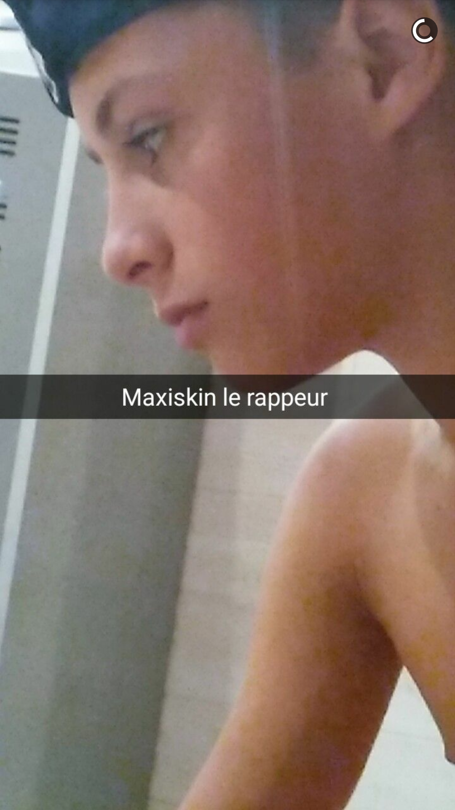
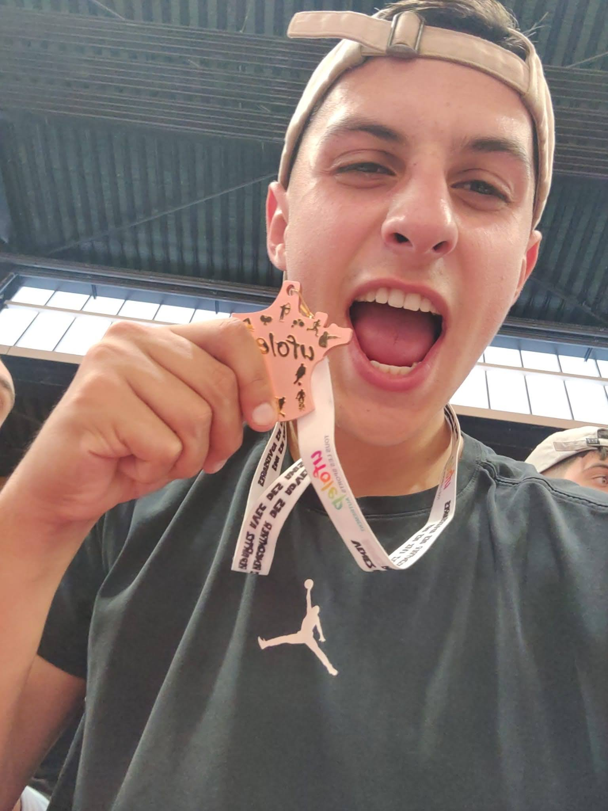

PLUS QU'UNE VOIX,
UNE PERSONNALITÉ
Découvrez comment je transforme ma passion du sport en métier.
De la Gym au Micro
Salut, c'est Maxime ! À 23 ans, je suis un pur produit du monde associatif sportif. Ancien gymnaste de niveau régional, j'ai grandi dans les gymnases et sur les stades. Très vite, j'ai compris que ce que j'aimais le plus, ce n'était pas seulement la performance, mais l'ambiance autour.
J'ai troqué le magnésie pour le micro avec une ambition simple : dépoussiérer l'image du speaker traditionnel. Pas de phrases toutes faites, mais de la spontanéité, de l'humour et une énergie capable de fédérer tout un public.

L'École de la Mascotte & du Digital
Mon atout secret ? J'ai été mascotte officielle pour une équipe de Basket en Pro A. Cette expérience m'a appris l'essentiel de mon métier : ne jamais avoir peur du ridicule et tout donner pour le public. Savoir capter l'attention sans dire un mot m'aide aujourd'hui à mieux utiliser ma voix.
En parallèle, je suis un enfant du numérique. Je ne me contente pas d'animer le jour J : je crée du contenu, je monte des vidéos et je gère la communication de clubs sportifs. Quand vous m'engagez, vous engagez aussi quelqu'un qui comprend les codes d'Instagram et TikTok pour faire rayonner votre événement.

L'Aventure Meeting Chaussette
On dit souvent qu'on n'est jamais mieux servi que par soi-même. Avec mon père, nous avons créé de toutes pièces un événement d'athlétisme unique en son genre : Le Meeting Chaussette.
Le concept ? Une compétition sérieuse avec des athlètes internationaux, mais une ambiance totalement décalée où chaque participant reçoit des chaussettes funs. Partis de rien, nous réunissons aujourd'hui entre 300 et 500 personnes.
Cette expérience d'organisateur a changé ma vision de speaker. Je connais le stress de l'organisation, les aléas du direct et l'importance de la gestion des partenaires. Quand j'anime votre événement, je le fais avec l'œil de l'organisateur : je suis là pour vous faciliter la vie et garantir que tout roule.